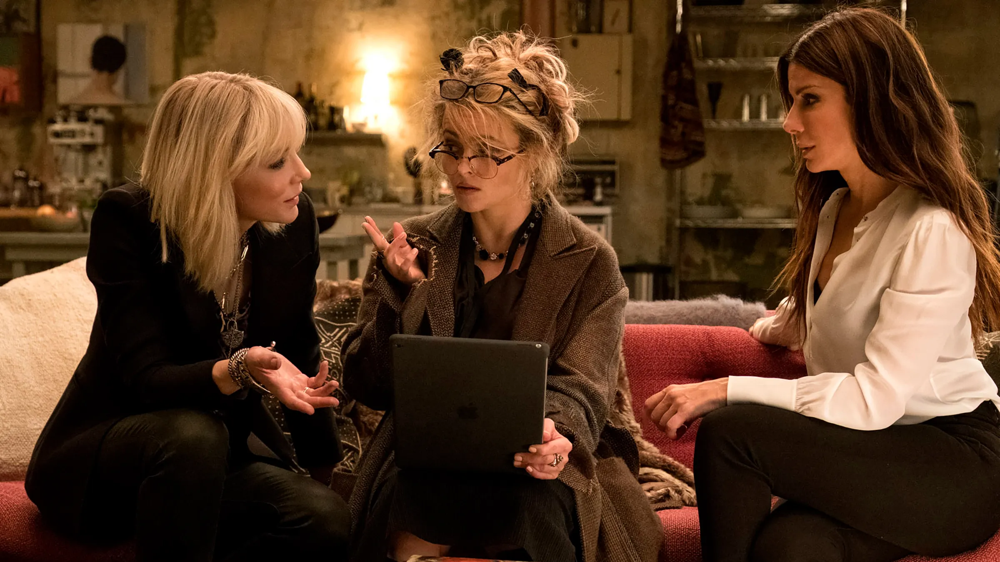
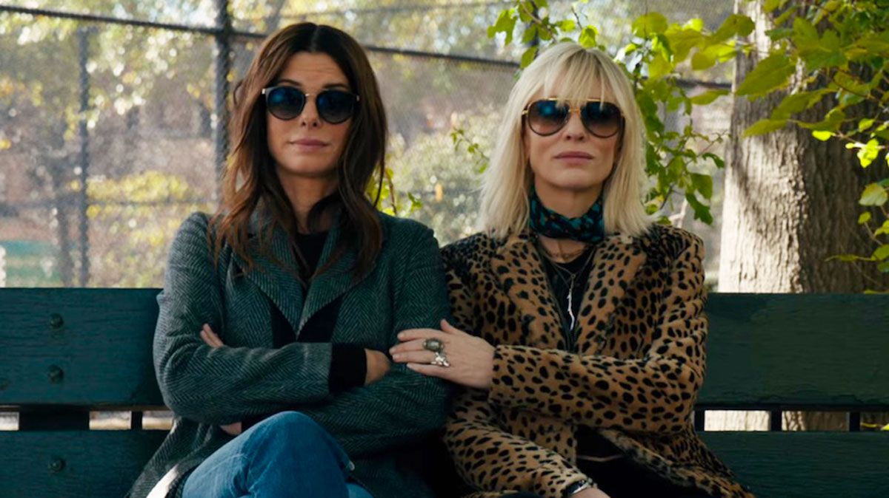

In the midst of this bloated summer blockbuster season crammed with comic book superheroes, here are your true avengers: the formidable female cast of “Ocean’s 8,” taking us on a giddy, fizzy escape while also making a pointed statement about the realities of the world in which we live. It’s a heist flick, carrying on the tradition of Steven Soderbergh’s “Ocean’s” trilogy (Soderbergh serves as a producer this time), with all the elaborate machinations you’ve come to expect from the series. It is crime as high art—which is fitting, given that the robbery this time takes place at The Met Gala, the annual fashion extravaganza at New York’s Metropolitan Museum of Art. It’s also the most flat-out fun movie that director and co-writer Gary Ross has made since his directorial debut, “Pleasantville,” 20 years ago. Slickly paced and radiating sexy glamour, “Ocean’s 8” moves with the swagger of a supermodel prancing down the runway.
 